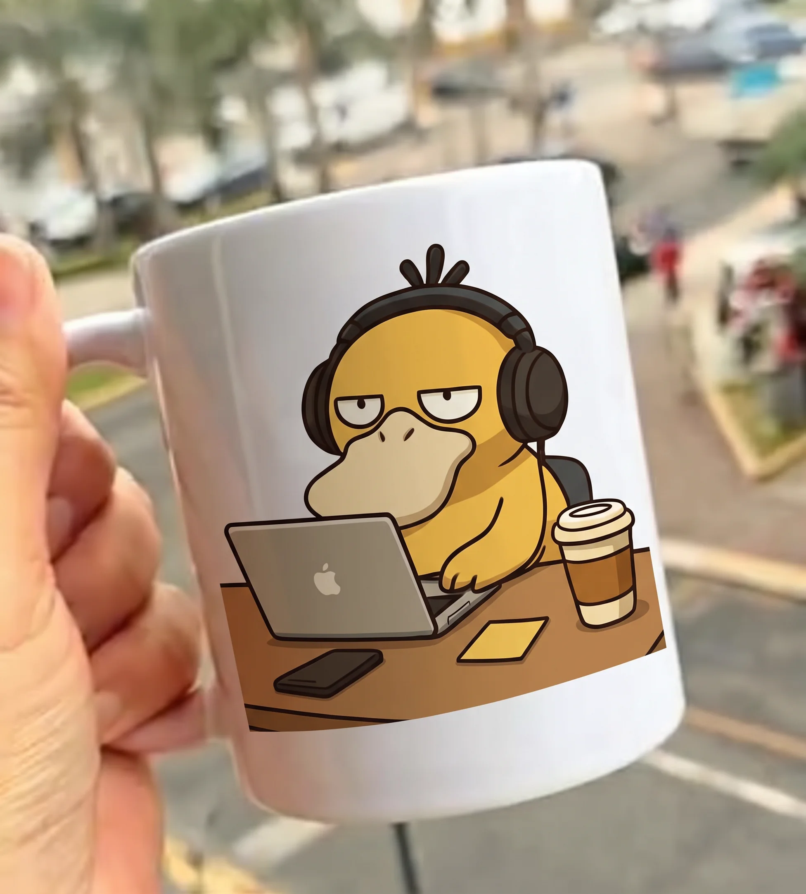

Tipografía + Color
Con tu nombre
Tipografía expresiva, iniciales ilustradas y combinaciones cromáticas hechas para que nadie confunda tu taza.
Ver colección con nombre
Transformamos nombres, fotografías, mascotas e ilustraciones originales en tazas personalizadas mediante sublimación. Colores vivos, cerámica con presencia y composiciones creadas para que tu taza hable por ti.


Cinco caminos para dar forma a tu taza personalizada. Selecciona una colección para filtrar el catálogo inferior o abrir un modelo base.
Tipografía expresiva, iniciales ilustradas y combinaciones cromáticas hechas para que nadie confunda tu taza.
Ver colección con nombre
Retratos de mascotas, recuerdos en formato polaroid o tu imagen favorita adaptada al formato cerámico.
Explorar tazas con foto
Composiciones geométricas, botánicas y personajes de estudio listos para personalizar.
Descubrir ilustraciones
Detalles con mensaje propio para aniversarios, cumpleaños o cómplices del café.
Ver ideas de regalo
Tu logotipo o identidad visual sobre cerámica bicolor para estudios, equipos y cafeterías.
Ver opciones para marca
Elige cualquier modelo como punto de partida para personalizar tu nombre, color interior o fotografía, o agrégalo directamente a tu selección.
Datos de demostración centralizados: Los precios en pesos mexicanos (MXN) y
variantes están centralizados en js/data.js como referencia para el prototipo. Las imágenes
recortadas del catálogo son mockups conceptuales de referencia, no fotografías de lotes ya
fabricados.

$150 MXN + envío
Cerámica blanca completa con personalización a tu elección (fotos, logotipos, nombres o dedicatorias).

$200 MXN + envío
Interior y asa con color vibrante a juego. Elige entre 10 tonalidades y añade tu personalización completa.
Tres pasos claros implementados directamente en este sitio para que configures tu taza personalizada con total claridad.
Selecciona tu base favorita: Taza Blanca Clásica ($150) o Taza Bicolor ($200) con asa e interior a juego en 10 tonalidades vibrantes.
Adjunta tu imagen, foto o logotipo y cuéntanos en las notas tus especificaciones y cuántas piezas idénticas necesitas para tu proyecto o regalo.
Revisa tus subtotales al instante y pulsa para enviar tu solicitud directa a WhatsApp con todos los detalles listos para agilizar tu atención personalizada.
Explora una selección de tazas reales, artes de estudio y mockups de empaque. Descubre la nitidez del color, el acabado cerámico y el estilo que podemos plasmar en tu propia taza.


Todo lo que necesitas saber sobre la personalización de tazas, los formatos de imagen recomendados y el alcance actual de este prototipo.
Puedes subir cualquier imagen PNG o JPG desde tu navegador sin costo ni registro.
Al abrir el personalizador puedes escribir un nombre, añadir una frase complementaria, elegir el color interior de la taza y subir una imagen desde tu dispositivo. El lienzo interactivo genera una vista previa ilustrativa al instante para ayudarte a componer tu idea. Ten en cuenta que esta vista es una guía visual orientativa en pantalla y no constituye una prueba exacta de color ni de curvatura final de impresión por sublimación.
Puedes cargar imágenes en formato PNG, JPG o WebP (hasta 8 MB en el navegador). Para lograr el mejor resultado en sublimación recomendamos fotografías bien iluminadas, sin capturas de pantalla comprimidas y, en el caso de logotipos o ilustraciones, archivos PNG con fondo transparente.
Las tazas sin fondo del catálogo principal son mockups conceptuales de referencia diseñados para mostrar la dirección gráfica de StampaDito y las áreas de personalización. En la sección «Referencias gráficas de la carpeta StampaDito» puedes consultar también las muestras fotográficas originales incluidas en el archivo del proyecto.
Información comercial pendiente de confirmación: Los tiempos de elaboración, tarifas de mensajería local o nacional y puntos de entrega serán definidos por la administración de StampaDito antes de habilitar el cobro en línea. No prometemos plazos ni envíos hasta contar con los datos operativos definitivos.
Esta versión corresponde a un prototipo funcional de comercio electrónico sin pasarela de pagos conectada. Puedes agregar tazas personalizadas al carrito local, ajustar cantidades y copiar o descargar el resumen estructurado de tu pedido, pero no se simula ni procesa ningún cargo bancario.
Información comercial pendiente: Ya puedes previsualizar el logotipo de tu marca en la colección «Para tu negocio». Los mínimos de compra por mayoreo, descuentos por volumen y requisitos de facturación se publicarán en este apartado cuando el negocio los confirme.